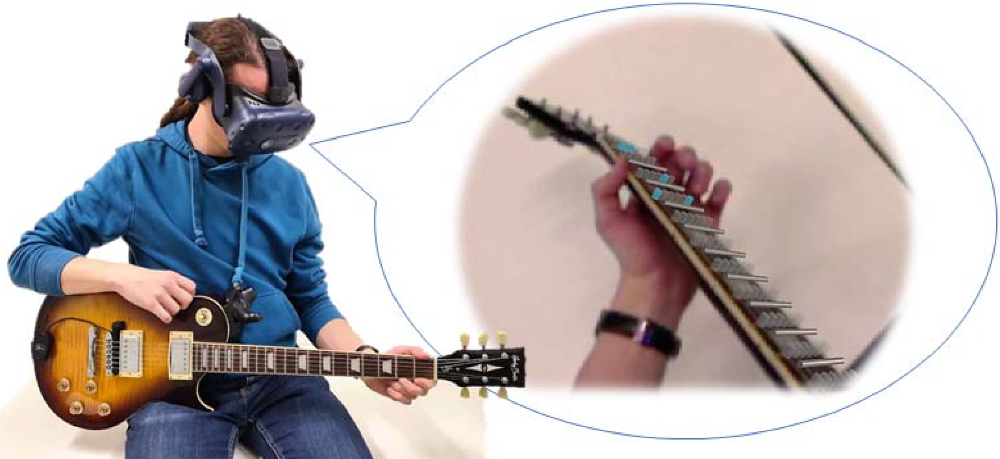

AR Hero: Generating Interactive Augmented Reality Guitar Tutorials


Authors. Lucchas Ribeiro Skreinig, Ana Stanescu, Shohei Mori, Frank Heyen, Peter Mohr, Michael Sedlmair, Dieter Schmalstieg, Denis Kalkofen
Venue. VRW (2022)
Abstract. We introduce a system capable of generating interactive Augmented Reality guitar tutorials by parsing common digital guitar tablature and by capturing the performance of an expert using a multi-camera array. Instructions are presented to the user in an Augmented Reality application using either an abstract visualization, a 3D virtual hand, or a 3D video. To support individual users at different skill levels the system provides full control of the playback of a tutorial, including its speed and looping behavior, while delivering live feedback on the user’s performance.